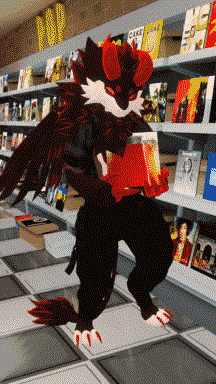
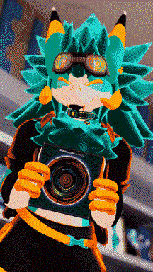
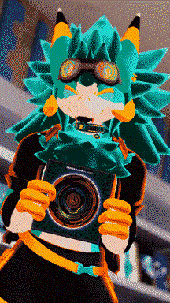
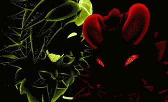

more music more people
another day out with my friend - feb 18th, 2025
song for this post: pendulum - streamline

went to the record store with krypton again. not as packed as before which was nice.
he's been introducing me to a lot of new artists recently. what he's shown me is the kind of stuff i didn't think i'd ever like but a lot of it's grown on me really fast. so much music.. a picture of me holding nine inch nails' album the fragile bc it matches me pretty good ( pic taken by krypton)
i like the downward spiral more but the fragile is good too.
he's been introducing me to a lot of new artists recently. what he's shown me is the kind of stuff i didn't think i'd ever like but a lot of it's grown on me really fast. so much music.. a picture of me holding nine inch nails' album the fragile bc it matches me pretty good ( pic taken by krypton)
i like the downward spiral more but the fragile is good too.
i don't usually go out to places with friends anymore for my reasons but i hope this happens more often. it felt good and if it doesn't happen again, something bad will happen... to krypton.. (not really) (maybe)
met this person at the record store and he let me take a picture of him. his name was silico. he was massive.
i don't usually take pictures of random people but he was huge. i wanted other people to see even though it doesn't really show it in the picture. whatever he was big and colorful and nice to me. 
i don't usually take pictures of random people but he was huge. i wanted other people to see even though it doesn't really show it in the picture. whatever he was big and colorful and nice to me. 
krypton and i. in the dark. glowing guys. watching you. in the dark. staring.

there are more pictures over here because this site's admin won't let me upload anything "too big". annoying.